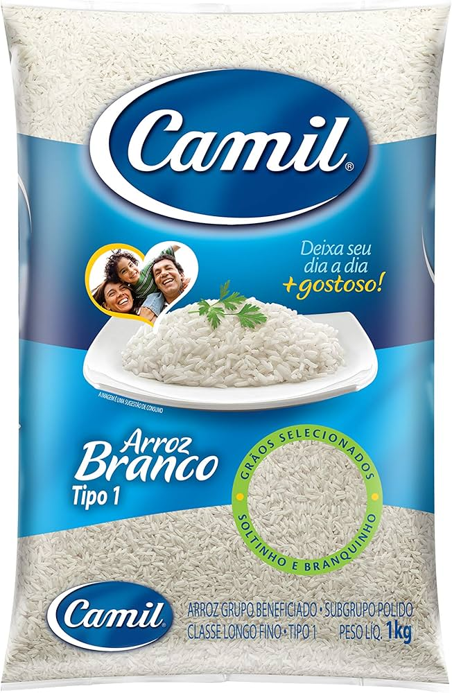
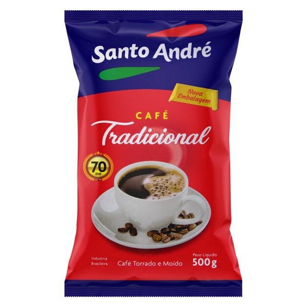

Produtos Alimentícios não Perecíveis
Pães fresquinhos, bolos, e outros itens de padaria que são preparados diariamente.
Pães fresquinhos, bolos, e outros itens de padaria que são preparados diariamente.
Arroz Camil 1kg
Arroz Camil é um arroz de grãos longos e finos, que após o cozimento fica soltinho e macio. Ideal para o preparo de diversos pratos, como risotos, saladas e acompanhamentos. Com 1kg, é uma ótima opção para o dia a dia.
R$ 6,70
Café Santo Andre 500g
Café Santo Andre é um café torrado e moído, com sabor intenso e aroma marcante. Ideal para quem gosta de um café encorpado e saboroso. Com 500g, é uma ótima opção para o café da manhã ou para um cafézinho a qualquer hora do dia.
R$ 23,90